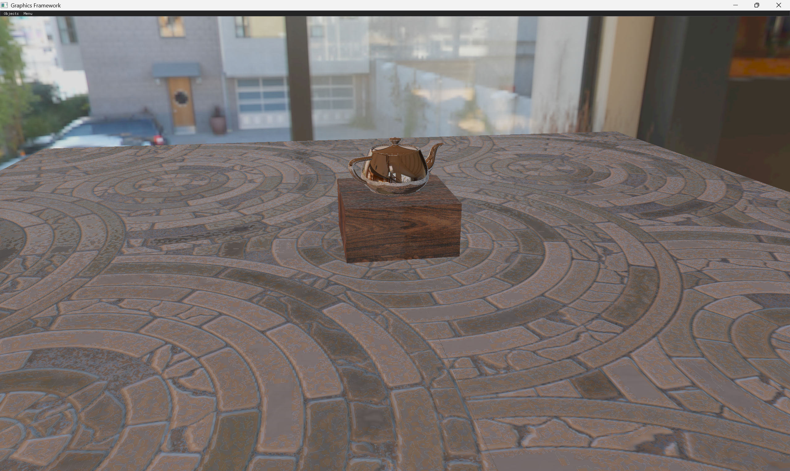

Advanced Computer Graphics
Extended a prebuilt C++/OpenGL framework with the core 3D rendering pipeline, including homogeneous coordinate transformations and perspective projection, plus a physically based GLSL microfacet BRDF with diffuse, specular, and Fresnel terms.
Added texture mapping, sky dome rendering, normal mapping, and dual-paraboloid environment reflections, a two-pass shadow mapping pipeline using FBOs, and HDR image-based lighting with irradiance maps.